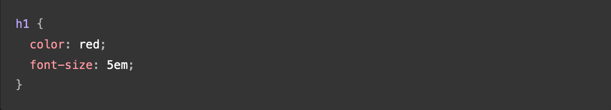

Fundamental Web Technologies
HTML

At its heart, HTML is a language made up of elements, which can be applied to pieces of text to give them different meaning in a document (Is it a paragraph? Is it a bulleted list? Is it part of a table?), structure a document into logical sections (Does it have a header? Three columns of content? A navigation menu?), and embed content such as images and videos into a page.
Elements consist of:
A tag name
Required or optional attributes
It can be easier to understand what is going on in your code if you have it nicely formatted. In this HTML each nested element is indented by four spaces more than the one it is sitting inside. It is up to you to choose the style of formatting (how many spaces for each level of indentation, for example).
In Visual Studio Code, you can automatically format your code by following these steps:
- Type ctrl-shift-p (windows) or cmd-shift-p (mac) to open the Command Palette
- n the Command Palette, type format
- From the results, choose Format Document
CSS

CSS is a language for specifying how documents are presented to users. It can be used for very basic document text styling — for example, for changing the color and size of headings and links. It can be used to create a layout — for example, turning a single column of text into a layout with a main content area and a sidebar for related information. It can even be used for effects such as animation.
- CSS is a rule-based language — you define the rules by specifying groups of styles that should be applied to particular elements or groups of elements on your web page.
- For example, you can decide to have the main heading on your page to be shown as large red text. The following code shows a very simple CSS rule that would achieve the styling described above
JavaScript

JavaScript is a programming language that allows you to implement complex functionalities on web pages. Every time a web page does
more than just sit there and display static information
for you to look at—displaying timely content updates, interactive maps, animated 2D/3D graphics, scrolling video jukeboxes,
or more—you can bet that JavaScript is probably involved.
The core client-side JavaScript language consists of some common programming features that allow you to do things like:
Store useful values inside variables
Perform operations on pieces of text (known as "strings" in programming)
Run code in response to certain events occurring on a web page - for example, a user clicking a button
What is even more exciting however is the functionality built on top of the client-side JavaScript language.
So-called Application Programming Interfaces (APIs) provide you with extra superpowers to use in your JavaScript code.
- APIs are ready-made sets of code building blocks that allow a developer to implement programs that would otherwise be hard or impossible to implement. They do the same thing for programming that ready-made
furniture kits do for home building
- it is much easier to take ready-cut panels and screw them together to make a bookshelf than it is to work out
the design yourself, go and find the correct wood, cut all the panels to the right size and shape,find
the correct-sized screws, and then put them together to make a bookshelf.
Back to top